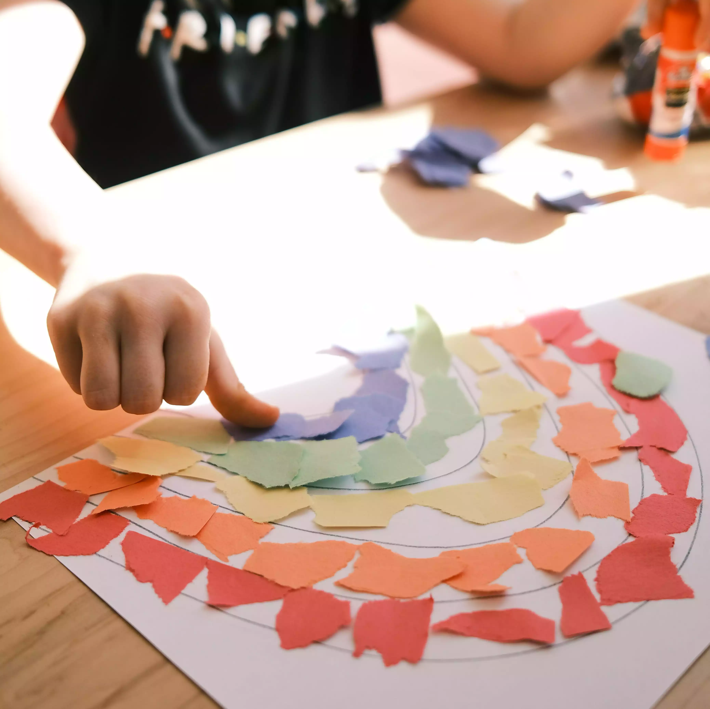
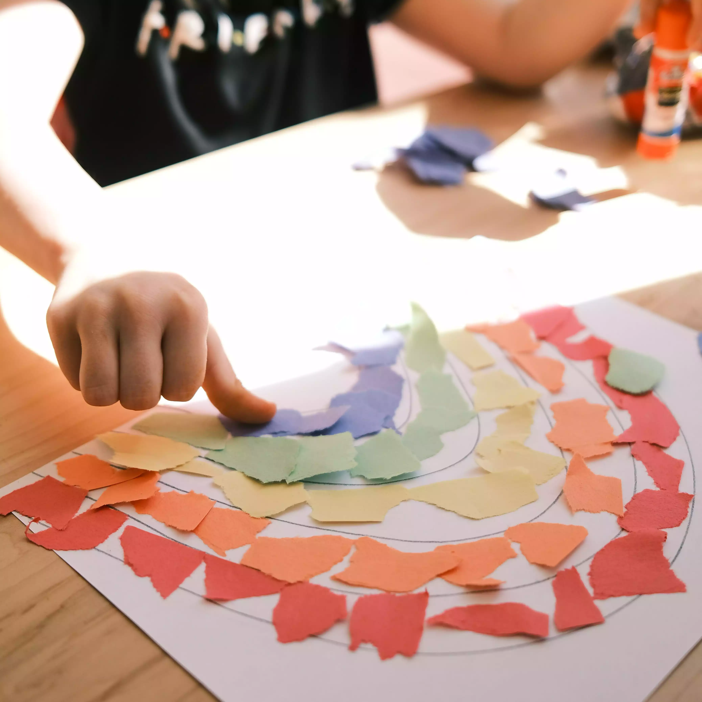

UntrefSchool es un instituto educativo público que ofrece educación de calidad a estudiantes de todas las edades. Nuestra misión es preparar a nuestros estudiantes para el éxito en la universidad y en la vida. Contamos con un equipo de profesores altamente capacitados y experimentados, que están comprometidos a ayudar a nuestros estudiantes a alcanzar su máximo potencial.
Quienes somos

Por qué elegirnos
Hay muchas razones por las que elegir UntrefSchool. En primer lugar, ofrecemos una educación de calidad a un precio asequible. En segundo lugar, contamos con un equipo de profesores altamente capacitados y experimentados. En tercer lugar, ofrecemos una amplia gama de programas académicos que se adaptan a las necesidades de todos los estudiantes. En cuarto lugar, tenemos un campus moderno y bien equipado. En quinto lugar, ofrecemos una variedad de actividades extracurriculares que ayudan a nuestros estudiantes a desarrollar sus habilidades y talentos.
Plan Educativo
La propuesta educativa de UntrefSchool se basa en los siguientes principios:
- Enseñanza personalizada: nuestros profesores se toman el tiempo de conocer a cada estudiante y adaptar su enseñanza a sus necesidades individuales.
- Aprendizaje activo: nuestros estudiantes participan activamente en su aprendizaje, a través de actividades, proyectos y discusiones.
- Foco en el desarrollo de habilidades: nuestros estudiantes aprenden a pensar críticamente, a resolver problemas y a comunicarse de manera efectiva.
- Preparación para la universidad y la vida: nuestros estudiantes reciben una educación que los prepara para el éxito en la universidad y en la vida laboral.
 
